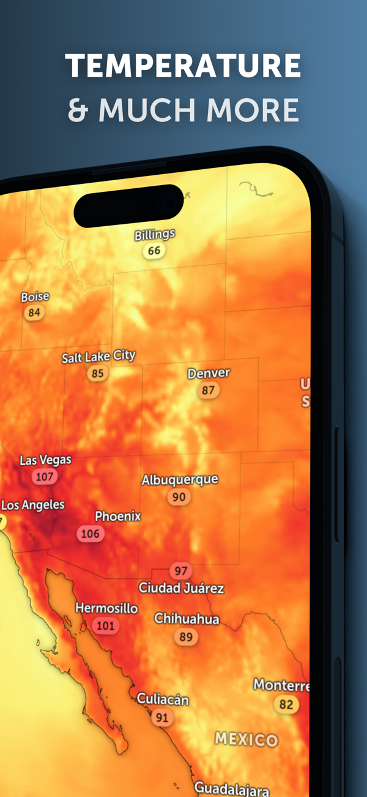
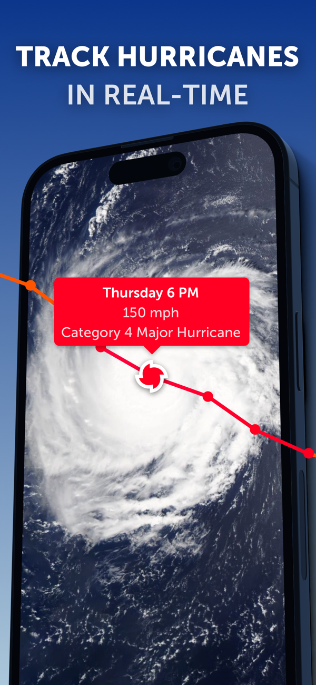

教你用 zoomearth 把全球气象搬上桌面
zoomearth 是一款把卫星影像、雷达回波、预报图层、台风追踪和野火监测揉进同一张地图的桌面工具。这篇教程带你从零安装设置、读懂第一张图、追踪一次台风，把它真正用起来。
这篇教程走完，你能独立完成 zoomearth 的安装配置、调出第一张实时卫星影像、读懂气温与雷达图层、以及用它追踪一次台风的完整流程。
准备：你需要什么
zoomearth 是一款面向桌面端的全球气象可视化工具——静止卫星每十分钟更新的云图、极轨卫星的高清影像、降雨雷达回波、九层预报图层（气温、体感、风速、阵风、气压、湿球温度……）、台风实时追踪、甚至 NASA 的野火热点，全部叠在同一张地图上。它的官网上说，最吸引人的一条是「从生成到最高等级（Category 5）实时跟进」的热带气旋追踪能力，对喜欢盯极端天气的人来说，这一点就值回票价。
安装包从zoomearth下载拿就行，解压后直接运行主程序即可，不需要复杂的依赖配置。不同版本之间界面入口位置可能微调，以你手上的版本为准——但核心功能和数据层是一致的。
有一个细节必须提前说：zoomearth 默认全部时间戳按 UTC（协调世界时）显示，风速按英里每小时。对中文用户来说，第一次打开会直接懵掉——信息表里写着 06:00，实际上是北京时间下午两点。别急着往下点，先花两分钟把这个口径掰过来。
第一步：先调三样设置，以后每次看图都顺
zoomearth 的设置入口在主界面的菜单里（不同版本的位置略有差别，有的在右上角齿轮，有的在菜单栏下拉）。打开后直接进入个性化设置面板，把下面三项改完再回来逛。
第一调：时区。 找到时区选项，选「本地时区」或者手动指定 UTC+8。改完之后，所有时间戳、时间轴上的刻度、信息表里的台风生成时间，全部按北京时间显示。这一步不做，后面看到的每个时间都要在脑子里加八小时，非常容易看错。
第二调：单位。 温度改摄氏（°C），风速改 km/h 或 m/s，气压改 mb（毫巴）——国内的天气预报口径就是这一套，改完之后图上的数字跟手机天气 App 对得上，不会再出现「明明标着 72°F 我怎么体感像 22°C」的尴尬。这里注意，风速还有「节（knots）」的选项，1 节约等于 1.85 km/h，航海航空领域常用，但一般看图不需要。
第三调：动画与显示。 动画样式控制卫星影像时间轴的播放节奏，默认就行，觉得云系播放太快或太慢再调。界面缩放是 6.2.1 版新增的功能——如果觉得字小、按钮挤（尤其是高分屏），就在这里把界面放大一档，可读性立刻好很多。旧版本没有这个选项，属于版本差异，不影响核心功能。
调完这三样，别急着关设置，先点一下主界面的空白处让地图加载出来——你会发现整个界面的数字一下子变得顺眼了。
第二步：调出第一张实时卫星影像
主界面默认就是实况云图，但刚装好的时候可能什么都没加载出来——别急，zoomearth 启动后需要几秒去 NASA 的 GIBS 切片服务拉影像。
看到地图后，先找一下左下角或底部的时间轴控件。静止卫星的数据是每十分钟更新一档的，时间轴上的每一格就是一个十分钟档。用鼠标按住时间轴的滑块，左右拖动，你会看到全球的云系跟着时间在动——这就是 zoomearth 最标志性的体验：把几小时的云图浓缩在几秒里回放。
这里顺便说一下数据源的差异：静止卫星（比如日本的向日葵、美国的 GOES）永远盯着同一片区域，所以每隔十分钟就能拍一张，适合看短时云系变化和台风眼的细节；极轨卫星绕着两极飞，一天扫全球两次，但分辨率更高，适合看高清大图。zoomearth 把这两类数据都接进来了——你可以在卫星影像的子菜单里切换「实况」和「高清」两种模式。
GeoColor 是一种很有意思的成像风格——白天是接近人眼观感的真彩色，夜间会自动叠加城市灯光和火点标记。想看烟雾扩散、想看野火冒烟的方向，切到 GeoColor 模式比普通可见光清楚得多。
第三步：读一张气温图层，看懂色阶不是色盲图
卫星影像是定性的（看云系形状），预报图层是定量的（看具体数值）。九层预报图层里，气温图层是最直观的一层——它显示的是地面以上 2 米处的空气温度，也就是气象站百叶箱量的那个高度。

切换到气温图层后，地图会变成一张巨大的色阶图：蓝色是冷区（极地附近、海拔高的山脉），绿色是凉，黄色橙色是暖，红色是热。图上直接标注了主要城市的温度数值——扫一眼就能知道整个区域的冷暖格局：比如夏天的华南一片红，而青藏高原的轮廓在图上是一条清晰的蓝色带。
有两个点容易忽略：
一是「2 米」这个高度。柏油路面夏天可以烤到 60 度以上，但那不是气温——气象口径的气温永远取百叶箱高度，避免地表辐射的干扰。zoomearth 严格遵循这个标准，所以图上的数值跟你出门前手机天气 App 看到的是同一口径。
二是拖时间轴看日变化。把时间轴从早上拖到晚上，你会看到一个区域的温度像波浪一样起伏：午后两三点升到顶，凌晨跌到谷。城市热岛效应在时间轴拖到夜间时特别明显——郊区已经凉下来了，城市中心还留着一圈暖黄色的热点。
如果你看完气温还觉得「明明 28 度怎么这么闷」，那是湿度在起作用——切到体感温度图层，它把湿度和风的因素都算进去了。高温高湿天想知道会不会出健康问题，看湿球温度图层，这个指标直接对应人体散热能力，值超过 32°C 时长时间户外活动就有热应激风险。
第四步：追踪一次台风，看完整的热带气旋画像
台风追踪是 zoomearth 的招牌功能。打开台风图层（一般在主界面的图层菜单里可以找到），图上会出现一串标记点——每个点代表一个热带气旋当前的位置和过去的轨迹。

点一下其中一个气旋的标记，会弹出一个信息表。表里的几个关键值：类型（热带低压/热带风暴/台风/飓风，按强度分级）、风速（近中心最大风速）、气压（中心气压，越低越猛）、移速和移动方向。
关于等级划分，有两套刻度要注意：西太平洋习惯用「台风→强台风→超强台风」的口径，而大西洋和东北太平洋用「Category 1 到 5」的萨菲尔-辛普森量表。两套数字不通用——同样是「Category 5」，换成西太平洋的口径已经是超强台风级别了。跨洋比较强度的时候别直接对数字，先换算口径——zoomearth文档里有两套等级的完整对照表，查起来方便。
三个新手容易踩的坑：
- 只盯等级数字。同样是「台风级」，风圈大小、移动速度、降雨能力可能差很远。等级只概括近中心风力，真正的破坏力要看风圈半径（切到阵风图层看影响范围）、看移速（移动慢的台风雨下得多）、还要结合当地的天文潮。灾害评估交给官方预警就行，zoomearth 给的是辅助判断数据。
- 台风不会一直是同一个等级。过岛、遇到冷水坑、眼壁置换都可能让强度掉档再回升，所以轨迹线上的等级标记可能来回跳，别把单个点的数字当成趋势。
- 数据源有两家定报中心——美国的 NHC（国家飓风中心）和 JTWC（联合台风预警中心）。zoomearth 默认接的是 JTWC 的数据，和国内气象台的定报可能有细微差异，属正常现象。
想看台风的完整画像，不要只盯信息表。信息表给的是「强度」，卫星影像给的是「结构」（有没有清晰的风眼、云系对不对称），阵风图层给的是「影响范围」（风圈多大、哪一侧最猛），三层叠起来才是全貌。
常见卡点速解
UTC 时间换算晕头转向。 这是新手中奖率最高的坑——明明改了时区设置，有些旧版本的信息表还是按 UTC 显示。如果遇到这种情况，直接在脑子里记一个简单的换算：UTC + 8 小时 = 北京时间。台风生成时间标着 06:00 UTC，就是下午 14:00 北京时间。
单位口径对不上手机天气。 zoomearth 支持的风速单位有 mph、km/h、m/s、节四种，温度有摄氏和华氏。手机天气 App 用的是摄氏 + km/h，zoomearth 默认是华氏 + mph。第一次启动就把这两项改过来，后面不会再有数字对不上的困惑。
台风等级看懵了。 记住一句话：西太平洋叫「台风」，大西洋叫「飓风」，本质是同一类东西的不同叫法。等级数字只在同一洋区内部有可比性，跨洋对比要换算。
往下还能玩什么
上面走的是最基础的四条路径，zoomearth 还有不少进阶玩法：短临外推（nowcast）基于雷达回波外推未来一两小时的降雨走向，比常规预报更精细；野火热点图层直接接入 NASA FIRMS 的卫星火点探测数据，配合 GeoColor 看烟雾扩散特别直观；气压图层能画出一条清晰的冷锋过境边界——色阶上一条冷色在暖色区域里往里切，就是冷空气在推暖空气了。这些资料和我整理的实战范例，我分别在三个 Git 仓库都留了备份：GitHub 上的仓库为主，Gitee 和 GitCode 里按相同的分类路径同步了一份，国内网络访问更顺手。